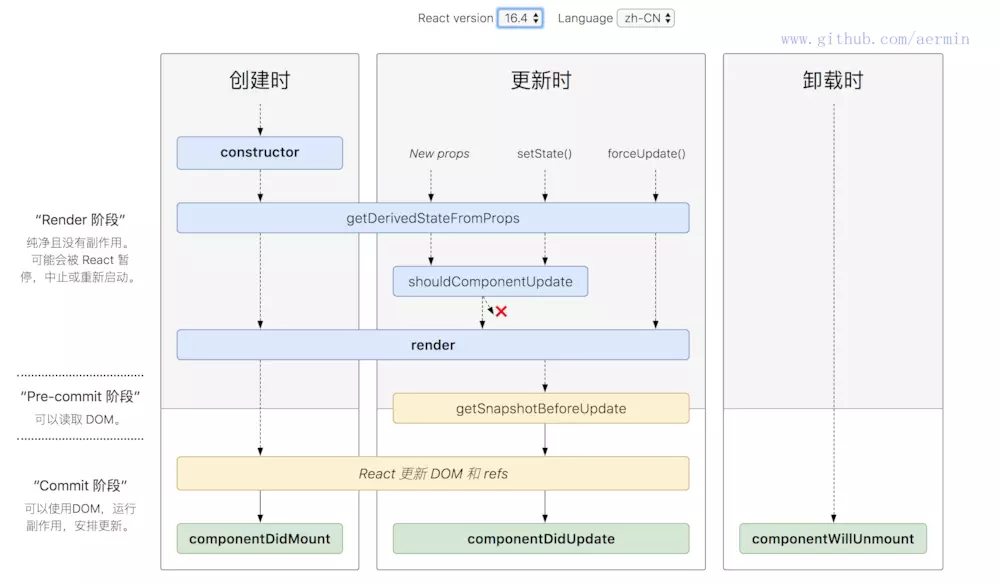

生命周期
正如人的生老病死一样，组件从创建到销毁也要经历一些特殊的阶段。官方给我们提供了一些方法，让我们可以在组件的这些阶段中添加自己的代码。
一、生命周期示意图
react v15

react v16.3

react v16.4

参考:React lifecycle methods diagram
二、详解生命周期(以react15版本为例)
一、初始化阶段
getDefaultProps在组件挂载之前调用，且只会调用一次，在组件中赋值的数据会被设置到this.props中
getIntitialState在组件挂载之前使用，且只会调用一次，函数的返回值会被设置到this.state中
二、挂载阶段
componentWillMount组件被挂载在
dom中使用，只会调用一次。，在render方法之前。这里使用this.setState不会引起组件的重新渲染。可以在这里进行普通变量的初始化赋值。render
render不负责组件的渲染，它只会返回一个ui给react,让react去渲染 PS:注意这里，触发render函数只是构建了ui，至于如何去渲染,有react决定
componentDidMount组件挂载在
dom后使用，只会调用一次。可以获取dom操作。这里使用this.state会引用重新渲染。http请求可以放在这里。
三、更新阶段
componentWillReceiveProps:function(nextProps)传入props时引起的组件更新,
nextProps指的是传入的props。如果我们要在这里要根据prop更新state,记得先将nextProps与this.props比较，确认二者不同再更新。 PS: 如果涉及到在子组件中使用nextProps接收父组件传递的值更新状态，又在子组件中给父组件传递更新状态时，一定要进行if比较操作，否则可能会不断render组件，直至浏览器内存耗尽，陷入死循环。// 基础数据类型比较 if(this.props.data!==nextProps.data){ this.statState({data:nextProps.data}) } // 引用数据类型比较 if(JSON.stringify(nextProps.data) !== this.props.data){ this.setState({ data:nextProps.data }) }shouldComponentUpdate在组件重新渲染之前调用，可以返回一个true或者false来决定组件是否要刷新。
componentWillUpdatecomponnentDidUpdate组件重新渲染之后调用
四、卸载阶段
componentWillUnmount组件卸载和销毁之前调用，在这里我们可以清理数据、状态和事件。比如某些操作会产生浏览器缓存，我们可以在这里将浏览器缓存清理掉。